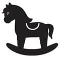

Kreş fikrini ortaya atan ilk insanın heykelini dikmek istiyorum!
Mevzunun buraya geleceği belliydi. Günümüzde her çocuk eninde sonunda kreşe gider. Gider. Gider gider. Tamam hepsi değilse bile %99’u. İyi tamam istatistik veriler vermeyelim, büyük çoğunluğu. Şimdi oldu mu? Ve her anne çocuğunu kreşe vereceğinde kaygı duyar.
Bir gün eski bir arkadaşım aradı ve sen çocuklarını kreşe verdin, şu an çok zor durumdayım, kaygılıyım, karar veremedim, sen ne dersin? dedi.
Diyaloğumuzu aynen olmasa da hatırladığım kadarıyla yazıyorum.
— Kim bakıyor çocuğa?
— Ben bakıyorum.
— Evin işini kim yapıyor?
— Ben yapıyorum.
— Sen duş alırken falan kim bakıyor çocuğa?
— Uyutuyorum, o arada, koştura koştura yıkanıyorum.
— Evde el işi çalışması yaptırıyor musun?
— O ne?
— Yani oyun hamuru falan.
— Aaaa yok, onları ağzına atar.
— Boya yapıyor mu? Kalem olur, patates baskısı vs.
— Yok canım, ortalık batar.
— Senden başka kimse var mı evde, kimleri görüyor?
— Arada sırada babaannesi dedesi geliyor, o kadar.
— Başka çocuklarla oynuyor mu?
— Aman herkes çalışıyor, akşam da eşim yorgun oluyor, genelde kimseyle görüşmüyoruz.
— Televizyon izletiyor musun?
— Hayır.
— Televizyon izletiyor musun?
— Biraz.
— Televizyon izletiyor musun?
— Açmayıp da napıcam Şermin, bütün gün evdeyiz, nasıl eğleyeceğim ben çocuğu, açıyorum tabi.
— O zaman kreşe ver, o arkadaşlar edinsin, onlarla oynasın, oyun hamurlarıyla oynasın, paylaşsın, sosyalleşsin, televizyon izlemesin, sen de gir ve rahat bir banyo yap.
Aslında hakikaten böyle. Bir yerden sonra ona yetemeyeceksin. Karı koca işi bırakıp onunla ilgilenseniz bile yetemeyeceksiniz. Çünkü ev küçücük bir dünya, her şeyi tanıdı ve bitti. Huzursuzlanmaya başladı, dışarı çıkmak istiyor, öğrenmek, denemek istiyor, ee hava her zaman güzel olmuyor ki, ne kadar dışarıda gezeceksiniz. Bakıcınızın olduğunu ve evde bakıcıyla birlikte kaldıklarını düşünelim. Lütfen bana bütün gün çocuğa televizyon izletmediğinin garantisini ver.
 Ben ne yaptım?
Ben ne yaptım?
İki yaşından önce kreşe çocuk verilemeyeceğini kimden duydum ve inandım bilmiyorum. En son bakıcımız da firar ettiğinde, ikizler 22 aylıktılar ve kreşe başladılar. Birkaç kreşten randevu aldım ve kreşleri dolaştım. Size ne hissettirdikleri önemli değil mi? Kreşi gezerken bende uyandırdığı duygulara baktım, içime en çok sinen yerle de anlaştım. Bir haftalık bir oryantasyon sürecinden sonra kreşli oldular. Ve düzenimiz tamamen değişti. Bak neler oldu.
- Mama sandalyesine asla oturmayan ve yattıkları yerden yemek yemek isteyen çocuklarım, kuzu kuzu mama sandalyesine oturdular.
- Tuna’ya üç kişilik bir animasyon ekibi gösteri yapardı yemek yesin diye, yine de canımızı okurdu. Kreşe başladı ve yemek yemeye başladı. Kreşte ilk öğrendiği sözcük “köfte” oldu.
- Eskiden her uykuları geldiğinde uyurlardı. Bazen kısa kısa günde 3 kez uyudukları olurdu. Kreşte düzen değişti, her gün öğlen aynı saatte uyumaya başladılar ve dolayısıyla gündüz uykuları düzene oturdu.
- Akşam yorulmuş olarak eve geldiler ve ben bir çocuktan “uykum var” cümlesini duyan seçilmiş annelerden biri oldum.
- Başka çocuklarla oynamayı öğrendiler. Başka çocukların da bulunduğu ortamlarda “anneeeee” diye tepemde oturmak yerine gidip onlarla oynamayı, kavga etmemeyi ve kavga etseler bile çözüm üretmeyi öğrendiler.
- İki kardeş aynı oyuncakla oynamak istediklerinde ve kavga geliyorum dediğinde, birbirlerini beklemeyi öğrendiler. “Benim sürem doldu, al kardeşim” diyebilecek kadar paylaşmayı öğrendiler.
- Kreşe başlamadan önce ellerini biz yıkıyor, üstlerini biz giydiriyor, yemeklerini biz yediriyorduk. Böylece tertemiz geziyorlar ve karınlarının tamamen doymuş olduğundan emin oluyorduk. Sonra kreşe başladılar ve Denver testlerinden çaktılar. Çocuğunuz ellerini kendisi yıkayamıyor, yemeğini yiyemiyor dediler. Üzüldük, ama bir dakika biz bunları hiç yaptırmadık ki, izin vermedik, dedik. Verin, dediler, verdik. Şimdi kendileri yapıyorlar.
- Spor yapıyorlar, el işi çalışmaları yapıyorlar, parka gidip yaprak toplayıp kreşte yaprak inceliyorlar, masada yemek yiyorlar, yemeklerini kendileri yiyorlar vs.
- Bir sorumluluk duygusuyla büyüyorlar. Sabah kalkılacak, yüz yıkanacak, süt içilecek, kıyafetler değişecek, annenin ve babanın hazırlanması beklenecek, birlikte yola çıkılacak…
- Hepsini bir kenara bırakın, bütün bir hafta boyunca hiç televizyon izlemiyorlar. Sadece bu yetmez mi?
Ve Name henüz daha 14 aylıkken kreşe başladı. Göreceksin korkmanı gerektirecek hiçbir şey yokmuş.
 Püf Noktaları
Püf Noktaları
- Evet kreşleri gez, içine sinen yeri tercih et. Ama lütfen evine ya da işine yakın bir yer olsun. Ulaşımın daha kolay olur, çocuğu servisle değil kendi aracınla götüreceksen çocuğun arabada geçireceği vakit daha az olur. Bu daha az çocuk ağlamasına ve çocuk kakası kokusuna maruz kalman anlamına gelir. İşine yakın olursa, gelip geçerken uğrayıp camdan ya da kameradan izleme şansın olur.
- Kreşe verme yaşına dikkat et. Çok erken vermek istemeyebilirsiniz, ama çocuk büyüdükçe onu göndermek için ikna etmeniz zor olabilir. Sonuçta hangi çocuk her istediğinin yapıldığı, kral ya da kraliçe gibi yaşadığı (bak prens, prenses demiyorum, olay daha aşmış), annesinin pervane gibi etrafında dolandığı, istediği zaman çikolata yiyebildiği, televizyon izleyebildiği bir yerden çıkıp da kuralların olduğu bir dünyaya gitmek ister ki?
- Sınıfları hangi yaş gruplarına göre ayırdıklarına dikkat et. 1,5 yaşındaki çocuğu 3 yaş grubunun sınıfına dahil edecek kurumla işin olmasın örneğin.
- İlk haftalarda kreşe bırakılan çocukların geneli ağlar. Bu gözyaşlarına kanma. Üzülürsün elbette, ama ne var yani, dilenmesi için cami avlusuna bırakmıyorsun. Sonuçta yaşıtları ile birlikte oynayabileceği güvenli bir eğitim kurumunda o. Çocuğun bunu bilmiyor ama sen biliyorsun. Derin bir nefes al, çocuğunu bırak ve uzaklaş. Ve o okula güven…
 Sıkıcı Tarafı
Sıkıcı Tarafı
Hafta sonları açık değiller:) Hadi canım, kreşe güvenen, çocuğunun mutlu olduğunu gören bütün anneler, en azından cumartesi de açık olsaydı diye düşünüyor, saklamayın. Neee, sadece ben miyim?
 Eğlenceli Yanı
Eğlenceli Yanı
Senin küçücük gördüğün oğlun ya da kızın bir gün sana kendi yaptığı kağıt kalplerle süslenmiş bir el işi çalışması getirdiğinde, ezberlediği bir şiiri okuduğunda, kreşe giderken birlikte şarkı söylediğinizde çok eğleneceksiniz.